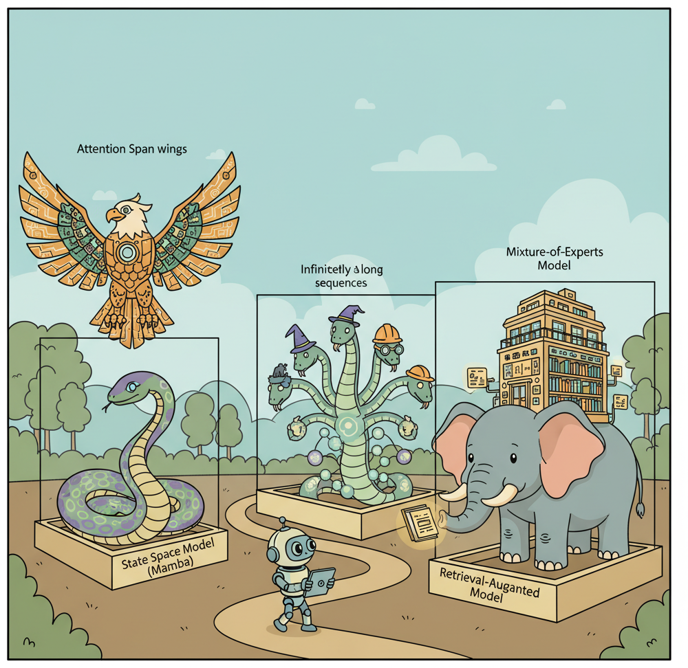

"The transformer is not the end of history. It is the beginning of the search for something better."
Frontier AI Agent
Prerequisites
This section builds on the transformer architecture covered in Section 04.1 through Section 04.5, particularly the self-attention mechanism and its quadratic complexity. Familiarity with inference optimization from Section 09.1 helps contextualize why alternative architectures are being explored.
The transformer's quadratic attention bottleneck creates a ceiling on sequence length and throughput. As applications demand million-token contexts, real-time streaming, and deployment on edge devices, the O($n^{2}$) cost of self-attention becomes prohibitive. A new generation of architectures, including state space models (SSMs), linear attention variants, and hybrid designs, aims to deliver comparable quality with fundamentally better scaling properties. This section surveys these alternatives, explains their core mechanisms, and evaluates when they represent a practical improvement over standard transformers. The attention mechanism described in Section 03.2 is the specific bottleneck these architectures aim to overcome.

1. The Scaling Problem with Self-Attention Basic
Standard self-attention computes a pairwise similarity score between every token in a sequence and every other token. For a sequence of length n, this produces an n x n attention matrix, requiring O($n^{2}$) time and memory. At a sequence length of 2,048 tokens, the attention matrix contains roughly 4 million entries. At 128K tokens, it balloons to over 16 billion entries. Even with FlashAttention and other optimizations (covered in Section 09.1), the fundamental quadratic relationship remains.
This bottleneck manifests in three practical ways. First, training cost: doubling the context window roughly quadruples the compute required for the attention layers. Second, inference latency: the KV cache grows linearly with sequence length, consuming GPU memory and slowing each decoding step. Third, accessibility: long-context transformer inference requires high-end GPUs, putting it out of reach for edge devices, embedded systems, and cost-sensitive deployments.
Mental Model: The Dinner Party Conversation. Self-attention is like a dinner party where every guest must personally listen to every other guest before speaking. With 10 guests, this means 100 pairwise conversations per round. With 1,000 guests, you need a million pairwise conversations. State space models work more like a single narrator who maintains a running summary: each new guest whispers their contribution, the narrator updates the summary, and no one needs to talk to everyone else. This is why SSMs achieve linear scaling, though the narrator's fixed-size summary means some nuance can be lost.
The alternative architectures surveyed in this section all attack this quadratic bottleneck, but they use different strategies and accept different tradeoffs. Some replace attention entirely. Others retain attention in a limited capacity and pair it with more efficient mechanisms. Understanding these tradeoffs is essential for choosing the right architecture for a given deployment scenario.
2. State Space Models: S4, Mamba, and Mamba-2 Advanced
State space models (SSMs) originated in control theory, where they describe systems that maintain a hidden state vector and update it at each timestep based on the current input. The key insight is that the hidden state has a fixed size regardless of how many timesteps have elapsed, giving SSMs O(n) time complexity for sequences of length n.
2.1 The S4 Foundation
The Structured State Space for Sequence Modeling (S4) paper by Gu et al. (2022) demonstrated that parameterizing state space models with specific matrix structures could make them competitive with transformers on long-range benchmarks. S4 models the sequence-to-sequence mapping as a continuous-time system discretized for digital processing:
State Space Model Equations.
The continuous-time formulation defines a linear dynamical system with state x(t) ∈ ℝN, input u(t) ∈ ℝ, and output y(t) ∈ ℝ:
$$x'(t) = A\, x(t) + B\, u(t) \qquad \text{(state evolution)}$$ $$y(t) = C\, x(t) + D\, u(t) \qquad \text{(output mapping)}$$where $A \in \mathbb{R}^{N \times N}$, $B \in \mathbb{R}^{N \times 1}$, $C \in \mathbb{R}^{1 \times N}$, $D \in \mathbb{R}$. Discretizing with step size $\Delta$ (using zero-order hold) yields the recurrence:
$$x_{k} = \bar{A}\, x_{k-1} + \bar{B}\, u_{k}$$ $$y_{k} = C\, x_{k} + D\, u_{k}$$where $\bar{A} = \exp(\Delta A)$ and $\bar{B} = (\Delta A)^{-1}(\exp(\Delta A) - I) \cdot \Delta B$. The hidden state $x_{k}$ has fixed size $N$ regardless of sequence length, giving $O(n)$ time complexity.
# S4 state space model (simplified)
# Continuous-time formulation:
# x'(t) = A x(t) + B u(t) (state evolution)
# y(t) = C x(t) + D u(t) (output)
#
# Discretized for step size delta:
# x_k = A_bar x_{k-1} + B_bar u_k
# y_k = C x_k + D u_k
import torch
import torch.nn as nn
class SimpleSSMLayer(nn.Module):
"""Simplified state space model layer for illustration."""
def __init__(self, d_model: int, state_dim: int = 64):
super().__init__()
self.d_model = d_model
self.state_dim = state_dim
# Learnable state space parameters
self.A = nn.Parameter(torch.randn(state_dim, state_dim) * 0.01)
self.B = nn.Parameter(torch.randn(state_dim, d_model) * 0.01)
self.C = nn.Parameter(torch.randn(d_model, state_dim) * 0.01)
self.D = nn.Parameter(torch.ones(d_model)) # skip connection
# Discretization step size
self.log_delta = nn.Parameter(torch.zeros(d_model))
def forward(self, u: torch.Tensor) -> torch.Tensor:
"""
Process sequence with linear recurrence.
u: (batch, seq_len, d_model)
returns: (batch, seq_len, d_model)
"""
batch, seq_len, _ = u.shape
delta = torch.exp(self.log_delta)
# Discretize continuous parameters (simplified Euler method)
A_bar = torch.eye(self.state_dim, device=u.device) + delta.mean() * self.A
B_bar = delta.mean() * self.B
# Recurrent scan through sequence
x = torch.zeros(batch, self.state_dim, device=u.device)
outputs = []
for k in range(seq_len):
x = A_bar @ x.unsqueeze(-1) + (B_bar @ u[:, k].unsqueeze(-1))
x = x.squeeze(-1)
y_k = (self.C @ x.unsqueeze(-1)).squeeze(-1) + self.D * u[:, k]
outputs.append(y_k)
return torch.stack(outputs, dim=1)Code 34.3.1: Simplified state space model layer showing the recurrence pattern. Production implementations use parallel scan algorithms for GPU efficiency rather than sequential loops.
The critical property of S4 is that the recurrence x_k = A_bar * x_{k-1} + B_bar * u_k
can be computed in two modes. During training, the recurrence can be unrolled into a convolution,
enabling parallel computation across the entire sequence on a GPU. During inference, the model operates
as a true recurrence: it updates the state with each new token and produces output in O(1) per step,
with no KV cache that grows with sequence length. This dual mode is a fundamental advantage over
transformers.
2.2 Mamba: Selective State Spaces
Mamba (Gu and Dao, 2023) addressed a key limitation of S4: the state transition matrices A and B were fixed for all inputs, meaning the model could not dynamically decide what information to retain or discard based on the current token. Mamba introduced selective scan, where B, C, and the discretization step delta are computed as functions of the input at each timestep.
# Mamba selective scan (conceptual)
# Key difference from S4: B, C, and delta are input-dependent
class SelectiveSSM(nn.Module):
"""Mamba-style selective state space model (simplified)."""
def __init__(self, d_model: int, state_dim: int = 16, expand: int = 2):
super().__init__()
d_inner = d_model * expand
# Input projection (expand dimension)
self.in_proj = nn.Linear(d_model, d_inner * 2, bias=False)
# Input-dependent parameter projections
self.B_proj = nn.Linear(d_inner, state_dim, bias=False)
self.C_proj = nn.Linear(d_inner, state_dim, bias=False)
self.delta_proj = nn.Linear(d_inner, d_inner, bias=True)
# Fixed A (diagonal, initialized with log-spaced values)
A = torch.arange(1, state_dim + 1, dtype=torch.float32)
self.log_A = nn.Parameter(torch.log(A).unsqueeze(0).expand(d_inner, -1))
# Output projection
self.out_proj = nn.Linear(d_inner, d_model, bias=False)
def forward(self, x: torch.Tensor) -> torch.Tensor:
"""
x: (batch, seq_len, d_model)
"""
batch, seq_len, _ = x.shape
# Project and split into two paths
xz = self.in_proj(x)
x_path, z_path = xz.chunk(2, dim=-1)
# Compute input-dependent parameters
B = self.B_proj(x_path) # (batch, seq, state_dim)
C = self.C_proj(x_path) # (batch, seq, state_dim)
delta = torch.softplus( # (batch, seq, d_inner)
self.delta_proj(x_path)
)
A = -torch.exp(self.log_A) # (d_inner, state_dim)
# Selective scan (in practice, uses custom CUDA kernel)
y = self._selective_scan(x_path, A, B, C, delta)
# Gated output
y = y * torch.silu(z_path)
return self.out_proj(y)
def _selective_scan(self, u, A, B, C, delta):
"""Hardware-aware selective scan (simplified)."""
batch, seq_len, d_inner = u.shape
state_dim = A.shape[-1]
# In production: parallel associative scan on GPU
# Here: sequential for clarity
h = torch.zeros(batch, d_inner, state_dim, device=u.device)
outputs = []
for t in range(seq_len):
# State update with input-dependent gating
A_t = torch.exp(delta[:, t, :, None] * A[None, :, :])
B_t = delta[:, t, :, None] * B[:, t, None, :]
h = A_t * h + B_t * u[:, t, :, None]
y_t = (h * C[:, t, None, :]).sum(dim=-1)
outputs.append(y_t)
return torch.stack(outputs, dim=1)Code 34.3.2: Simplified Mamba selective scan. The input-dependent B, C, and delta projections are the key innovation: the model learns what to remember and what to forget at each step.
The implementations above build SSM layers from scratch with sequential loops for pedagogical clarity. In production, use the mamba-ssm package (install: pip install mamba-ssm), which provides CUDA-optimized selective scan kernels that are orders of magnitude faster:
# Production Mamba using the official package
from mamba_ssm import Mamba
model = Mamba(
d_model=512,
d_state=16,
d_conv=4,
expand=2,
).cuda()
y = model(x) # Uses hardware-optimized parallel scan
For pre-trained Mamba models, use HuggingFace Transformers (install: pip install transformers), which supports Mamba and Jamba architectures with AutoModelForCausalLM.from_pretrained("state-spaces/mamba-2.8b").
Input: sequence u = [u1, ..., uL], model parameters (A, B_proj, C_proj, Δ_proj)
Output: output sequence y = [y1, ..., yL]
1. Initialize hidden state h = 0
2. for t = 1 to L:
// Input-dependent parameter computation
a. Bt = B_proj(ut) // project input to get B
b. Ct = C_proj(ut) // project input to get C
c. Δt = softplus(Δ_proj(ut)) // input-dependent step size
// Discretize and update state
d. Āt = exp(Δt · A) // discretized transition
e. B̄t = Δt · Bt // discretized input
f. h = Āt ⊙ h + B̄t ⊙ ut // state update (element-wise)
g. yt = Ct · h // output from state
return y
The selectivity mechanism makes Mamba data-dependent: it can choose to "open the gate" for important tokens (like a keyword in a retrieval task) and "close the gate" for irrelevant ones (like filler words). This is conceptually similar to how attention selectively focuses on relevant tokens, but it operates through a compressed state vector rather than explicit pairwise comparisons.
Mamba's selective scan is to attention as a running summary is to a full transcript. Attention keeps the full transcript (the KV cache) and re-reads relevant parts for each query. Mamba maintains a compressed summary (the hidden state) and updates it selectively. The summary is smaller and faster to query, but it cannot perfectly reproduce arbitrary details from early in the sequence. This is the fundamental tradeoff: O(1) memory per step versus O(n) memory, with some loss in recall precision for distant tokens.
2.3 Mamba-2: Structured State Space Duality
Mamba-2 (Dao and Gu, 2024) revealed a deep mathematical connection: the selective scan operation in Mamba is equivalent to a form of structured linear attention when viewed through the right lens. This "state space duality" (SSD) framework unifies SSMs and attention under a single theoretical umbrella, showing that they are two computational paths for the same underlying operation.
Practically, Mamba-2 achieves 2-8x speedups over Mamba-1 by exploiting this duality. The SSD layer uses a block-decomposition that processes chunks of the sequence using efficient matrix multiplications (the "attention-like" view) while maintaining the recurrent state across chunks (the "SSM view"). This means Mamba-2 gets the best of both worlds: the parallelism of attention during training and the constant-memory inference of recurrence during generation.
3. Linear Attention and Recurrent Alternatives Intermediate
3.1 RWKV: Reinventing RNNs for the Transformer Era
RWKV (Peng et al., 2023) takes a different approach: rather than inventing a new mechanism, it reformulates the transformer architecture to eliminate the quadratic attention computation while retaining the parallel training properties that made transformers successful. The name reflects its four core operations: Receptance (R), Weight (W), Key (K), and Value (V).
The key innovation is the WKV (Weighted Key-Value) mechanism, which replaces softmax attention with an exponentially decaying sum. Instead of computing attention scores between all pairs of tokens, RWKV maintains a running numerator and denominator that can be updated incrementally:
# RWKV WKV mechanism (simplified, single-head)
import torch
def rwkv_wkv(w, u, k, v):
"""
RWKV attention replacement.
w: decay factors (d_model,) - learned per-channel decay
u: bonus for current token (d_model,) - learned
k: keys (batch, seq_len, d_model)
v: values (batch, seq_len, d_model)
returns: output (batch, seq_len, d_model)
"""
batch, seq_len, d = k.shape
outputs = []
# Running state: exponentially weighted sum
state_num = torch.zeros(batch, d, device=k.device)
state_den = torch.zeros(batch, d, device=k.device)
state_max = torch.full((batch, d), -float('inf'), device=k.device)
for t in range(seq_len):
kt = k[:, t] # (batch, d)
vt = v[:, t] # (batch, d)
# Numerically stable exponential moving average
new_max = torch.maximum(state_max, kt)
# Combine historical state with current token
exp_prev = torch.exp(state_max - new_max)
exp_curr = torch.exp(kt - new_max)
exp_bonus = torch.exp(u + kt - new_max)
# Output: weighted combination
wkv = (exp_prev * state_num + exp_bonus * vt) / \
(exp_prev * state_den + exp_bonus)
outputs.append(wkv)
# Update running state with decay
state_num = torch.exp(w) * exp_prev * state_num + exp_curr * vt
state_den = torch.exp(w) * exp_prev * state_den + exp_curr
state_max = new_max
return torch.stack(outputs, dim=1)Code 34.3.3: Simplified RWKV WKV attention replacement. The exponential decay w controls how quickly the model forgets older tokens, functioning as a learned "memory horizon" per channel.
RWKV has reached competitive quality at scale. RWKV-6 models at 1.6B, 3B, 7B, and 14B parameters show performance comparable to similarly-sized transformers on standard benchmarks, while offering constant-memory inference. The RWKV community has trained models in multiple languages, and the architecture is fully open-source with an active ecosystem.
3.2 RetNet: Retentive Networks
RetNet (Sun et al., 2023) from Microsoft Research proposes a "retention" mechanism that supports three computation modes: parallel (for training efficiency), recurrent (for O(1) inference), and chunkwise (a hybrid for long-sequence processing). The retention mechanism uses complex-valued exponential decay rather than softmax normalization.
In the parallel mode, retention can be expressed as a matrix operation similar to attention, enabling efficient GPU utilization during training. In the recurrent mode, it becomes an RNN-like update with fixed-size state, enabling constant memory during inference. The chunkwise mode divides the sequence into fixed-size chunks, processes each chunk in parallel mode, and propagates state between chunks in recurrent mode. This triple formulation gives RetNet flexibility to optimize for the deployment scenario at hand.
3.3 Griffin and RecurrentGemma
Google DeepMind's Griffin architecture (De et al., 2024) combines linear recurrences with local attention in a hybrid design. Griffin uses a Real-Gated Linear Recurrence (RGLRU) layer that maintains a diagonal state matrix, interleaved with local sliding-window attention layers that handle short-range dependencies. The RecurrentGemma model series implements this architecture at the 2B and 9B parameter scales.
The practical significance of Griffin is that it demonstrates a design pattern: use efficient recurrence for the "backbone" of sequence processing, and add sparse attention layers only where they provide clear benefit (local context, retrieval-like operations). This hybrid approach often outperforms pure SSM or pure attention models of the same size.
The attention versus efficiency tradeoff is not all-or-nothing. The research trajectory is moving away from "replace attention entirely" toward "use attention surgically." Pure SSM models sacrifice recall precision on tasks that require exact matching or retrieval from earlier in the context. Pure attention models pay quadratic cost for every token, even when most tokens do not need to attend to most other tokens. The emerging consensus is that hybrid architectures (attention for precision-critical layers, linear recurrence for everything else) may dominate both pure approaches. For practitioners, this means that the inference optimization techniques from Chapter 09 (KV-cache management, continuous batching) will remain relevant even as architectures evolve, because attention layers will likely persist in some form.
4. Hybrid Architectures: Combining Strengths Intermediate
4.1 Jamba: Mamba Meets Transformers
AI21 Labs' Jamba model (Lieber et al., 2024) is the most prominent hybrid architecture, interleaving Mamba layers with transformer attention layers and Mixture-of-Experts (MoE) modules. The architecture uses a ratio of roughly 3:1 Mamba-to-attention layers, with MoE applied to the feed-forward components. This design achieves three goals simultaneously: the long-context handling of Mamba, the precise retrieval capability of attention, and the parameter efficiency of MoE.
# Jamba-style hybrid architecture (conceptual)
class JambaBlock(nn.Module):
"""
Hybrid block: alternates between Mamba and Attention layers.
Every 4th layer uses attention; the rest use Mamba.
MoE replaces standard FFN in selected layers.
"""
def __init__(
self,
d_model: int,
layer_idx: int,
n_heads: int = 16,
mamba_state_dim: int = 16,
num_experts: int = 16,
active_experts: int = 2,
attention_every_n: int = 4,
moe_every_n: int = 2,
):
super().__init__()
self.layer_idx = layer_idx
self.use_attention = (layer_idx % attention_every_n == 0)
self.use_moe = (layer_idx % moe_every_n == 0)
# Sequence mixing: either Mamba or Attention
if self.use_attention:
self.seq_mixer = MultiHeadAttention(d_model, n_heads)
else:
self.seq_mixer = SelectiveSSM(d_model, mamba_state_dim)
# Channel mixing: either MoE or standard FFN
if self.use_moe:
self.channel_mixer = MoELayer(
d_model, num_experts, active_experts
)
else:
self.channel_mixer = FeedForward(d_model)
self.norm1 = RMSNorm(d_model)
self.norm2 = RMSNorm(d_model)
def forward(self, x, attention_mask=None):
# Pre-norm residual connections
h = x + self.seq_mixer(self.norm1(x), mask=attention_mask)
out = h + self.channel_mixer(self.norm2(h))
return outCode 34.3.4: Conceptual Jamba-style hybrid block. The architectural ratio (how frequently attention layers appear) is a key design decision that trades recall precision for throughput.
Jamba's 256K-token context window with only 12B active parameters (52B total with MoE) demonstrates the efficiency gains possible with hybrid designs. On the NVIDIA A100, Jamba achieves 3x the throughput of a comparable pure-attention model at 128K context length because the Mamba layers eliminate most of the KV cache memory pressure.
Mixture of Experts Gating.
In an MoE layer with E experts, a gating network routes each token x to the top-k experts:
$$g(x) = \operatorname{softmax}(W_{g} \cdot x) \\ TopK = argtop-k(g(x)) \\ y = \sum _{i \in TopK} g_{i}(x) \cdot Expert_{i}(x)$$Only the top-k experts (typically k = 2) are activated per token, so the compute cost scales with k rather than E. To prevent expert collapse (all tokens routed to the same expert), a load balancing auxiliary loss is added:
$$\mathscr{L}_{balance} = \alpha \cdot E \cdot \sum _{i=1..E} f_{i} \cdot P_{i}$$where fi is the fraction of tokens dispatched to expert i, Pi is the mean gate probability for expert i across the batch, and α is a small coefficient (typically 0.01). This encourages uniform distribution of tokens across experts.
When would you choose a hybrid architecture in production? Consider a document analysis system that must process 100-page legal contracts. A pure transformer at 128K tokens requires substantial GPU memory for the KV cache. A pure Mamba model handles the length efficiently but may struggle with precise cross-reference retrieval ("what does Section 04.2(b) say about the indemnification clause mentioned in Section 12.1?"). A hybrid like Jamba uses Mamba layers for efficient processing of the bulk document while attention layers handle the precise cross-referencing. The result: lower cost, longer context, and comparable accuracy on the retrieval-heavy sub-tasks.
4.2 Design Principles for Hybrid Architectures
Empirical studies from multiple research groups have converged on several design principles for hybrid SSM-attention architectures:
Attention layer placement matters. Placing attention layers at regular intervals (every 4th or 8th layer) works better than clustering them. The attention layers serve as "information consolidation" points that allow the model to perform precise retrieval operations on the compressed state maintained by the SSM layers.
The ratio depends on the task. Tasks requiring heavy in-context retrieval (question answering, coding with large contexts) benefit from more frequent attention layers (every 2nd or 3rd layer). Tasks dominated by sequential generation (creative writing, summarization) work well with sparser attention (every 6th to 8th layer).
Sliding-window attention is often sufficient. Instead of full global attention, using a sliding window of 4,096 to 8,192 tokens in the attention layers preserves local precision while keeping memory costs bounded. The SSM layers handle global context propagation.
5. Efficiency Comparisons and Benchmarks Intermediate
Comparing architectures requires examining multiple dimensions: quality (benchmark scores, perplexity), throughput (tokens per second during training and inference), memory consumption, and latency characteristics. The following table summarizes approximate comparisons at the 7B parameter scale with 128K context length:
| Architecture | Attention Complexity | Inference Memory (128K) | Throughput (tok/s) | In-Context Retrieval |
|---|---|---|---|---|
| Standard Transformer | O($n^{2}$) | ~40 GB KV cache | Baseline (1x) | Excellent |
| Mamba-2 | O(n) | ~200 MB state | ~5x at 128K | Good (degrades at extreme range) |
| RWKV-6 | O(n) | ~150 MB state | ~4x at 128K | Good |
| Jamba (Hybrid) | O(n) amortized | ~8 GB (reduced KV) | ~3x at 128K | Very good |
| Griffin | O(n) with local attn | ~2 GB | ~3.5x at 128K | Good |
Table 34.3.1: Approximate efficiency comparison of architectures at 7B parameters, 128K context. Throughput multiples are relative to standard transformer. Actual numbers vary by implementation and hardware.
Use einops for readable tensor reshaping in attention and SSM layers.
# pip install einops
from einops import rearrange, repeat
import torch
# Reshape for multi-head attention: (batch, seq, d) to (batch, heads, seq, head_dim)
x = torch.randn(2, 128, 512)
heads = rearrange(x, "b s (h d) -> b h s d", h=8)
print(f"Multi-head shape: {heads.shape}") # (2, 8, 128, 64)
# Repeat a state vector across batch dimension
state = torch.randn(1, 64)
batched = repeat(state, "1 d -> b d", b=32)
print(f"Batched state: {batched.shape}") # (32, 64)
Define and train a minimal sequence model layer using the JAX ecosystem.
# pip install jax flax optax
import jax
import jax.numpy as jnp
import flax.linen as nn
import optax
class SSMBlock(nn.Module):
state_dim: int = 64
@nn.compact
def __call__(self, x):
d = x.shape[-1]
A = self.param("A", nn.initializers.normal(0.01), (self.state_dim, self.state_dim))
B = self.param("B", nn.initializers.normal(0.01), (self.state_dim, d))
C = self.param("C", nn.initializers.normal(0.01), (d, self.state_dim))
return x + (x @ B.T @ A.T @ C.T) # simplified skip connection
model = SSMBlock()
key = jax.random.PRNGKey(0)
params = model.init(key, jnp.ones((1, 128, 256)))
optimizer = optax.adamw(learning_rate=1e-3)
opt_state = optimizer.init(params)
print(f"Parameter count: {sum(p.size for p in jax.tree.leaves(params))}")
The "Needle in a Haystack" test reveals the retrieval gap. In this test, a specific fact is inserted at a random position in a long document, and the model must retrieve it from a distant point. Transformers with full attention achieve near-perfect accuracy at all positions and context lengths. Pure SSM models show degradation for facts placed in the middle of very long sequences (the "lost in the middle" effect is amplified by compressed state). Hybrid models split the difference, achieving strong retrieval when the fact falls within an attention window and moderate retrieval otherwise. This test remains the clearest diagnostic for evaluating alternative architectures.
6. When to Consider Non-Transformer Architectures Intermediate
For most production applications in 2025-2026, the transformer remains the default choice. The ecosystem of tools, pretrained models, fine-tuning frameworks (covered in Chapter 15), and serving infrastructure is built around transformers. Choosing an alternative architecture introduces friction at every stage of the pipeline. That said, several scenarios justify the switch:
Extremely long contexts with constrained hardware. If your application requires processing 100K+ tokens and you cannot afford the GPU memory for a transformer's KV cache, Mamba or RWKV models provide a practical path forward. The memory savings can be the difference between requiring one GPU and requiring four.
High-throughput streaming applications. For applications that process continuous streams of text (real-time transcription analysis, social media monitoring, log analysis), the constant-memory inference of SSMs is a natural fit. Each new token costs the same regardless of how many tokens have been processed, unlike transformers where the per-token cost grows with the KV cache.
Edge and mobile deployment. When deploying models on devices with limited memory and no access to cloud GPUs, SSM architectures offer the best quality-per-byte ratio for long-context tasks. The small state footprint (hundreds of megabytes vs. tens of gigabytes) makes on-device long-context processing feasible.
Decision matrix for architecture selection. A healthcare startup processes patient records averaging 50K tokens each. Option A: a transformer with FlashAttention and 4-bit quantization (covered in Section 09.3), requiring a single A100 GPU. Option B: a Mamba-2 model that handles the same records on an L4 GPU at one-quarter the cost. Option C: a Jamba-style hybrid that preserves the precise retrieval needed for medication interaction checks while using Mamba layers for the bulk of the record. The startup chose Option C: the medication interaction task is safety-critical and requires attention-level recall precision, while the overall record summarization can leverage the efficiency of SSM layers.
When NOT to switch. If your application works with contexts under 8K tokens, if you need the vast ecosystem of fine-tuned transformer models on Hugging Face, if your team lacks experience with newer architectures, or if your task is primarily about precise in-context retrieval, the transformer remains the better choice. The efficiency advantages of alternative architectures only materialize at longer sequence lengths, and the model availability gap is significant.
7. Neuromorphic and Event-Driven Approaches Advanced
A more speculative line of research explores architectures inspired by biological neural computation. Spiking neural networks (SNNs) process information as discrete spikes rather than continuous values, offering potential energy efficiency gains on specialized neuromorphic hardware like Intel's Loihi 2 and IBM's NorthPole.
SpikingGPT and similar projects have demonstrated that language modeling is possible with spiking architectures, though quality lags behind conventional networks at comparable scale. The primary advantage is energy consumption: neuromorphic chips can process inference workloads at 10-100x lower energy per operation than GPUs. If this efficiency gap translates to language models at scale, the implications for sustainability and edge deployment would be transformative.
Event-driven architectures extend this concept to data processing. Rather than processing all tokens uniformly, event-driven models activate computation only when the input changes significantly from the model's current prediction. For tasks like real-time document monitoring where most content is unchanged between updates, this can reduce compute costs by orders of magnitude. These approaches remain in the research stage and are not yet practical for production deployment.
The convergence of architectures. Mamba-2's state space duality theorem suggests that SSMs and attention may be endpoints on a spectrum rather than fundamentally different approaches. Recent work on "linear attention" (Katharopoulos et al., Yang et al.) and "gated linear attention" further blurs the boundary. The research community is moving toward a unified framework where the architectural choice is a hyperparameter (how much to compress the state) rather than a philosophical commitment. Watch for architectures that can dynamically adjust their compression ratio per layer and per input, spending full attention on tokens that need it and using compressed state for the rest.
Explain why standard self-attention has O(n^2) time and memory complexity, and describe how state space models (SSMs) and linear attention variants achieve O(n) complexity. For each alternative, explain: (a) the core mechanism that replaces pairwise token comparisons, (b) what capability is lost compared to full attention, (c) the empirical performance gap on standard language modeling benchmarks, and (d) the types of tasks where the linear alternatives perform comparably to full attention.
Analyze the Mamba architecture (a selective state space model). Describe: (a) how the "selection mechanism" allows the model to decide what information to remember or forget from the input, (b) how this differs from a fixed-parameter state space model, (c) why Mamba achieves comparable perplexity to transformers on language modeling despite not having explicit attention, and (d) the inference speed advantage of Mamba for long sequences (no KV cache, constant memory per token). Calculate the memory savings for a 1M-token sequence compared to a transformer with a standard KV cache.
Write a Python benchmarking script that measures the memory usage and forward-pass time of a standard self-attention layer versus a simulated linear-time alternative as sequence length increases from 512 to 32,768 tokens. For the attention layer, use PyTorch's scaled_dot_product_attention. For the linear alternative, implement a simple recurrent scan that processes tokens sequentially with a fixed-size hidden state. Plot both memory and time on log-log axes and verify that attention shows O(n^2) scaling while the linear alternative shows O(n).
Several recent models (Jamba, Zamba, Griffin) combine attention layers with SSM or linear attention layers in a hybrid architecture. Discuss: (a) Why would mixing attention and SSM layers work better than either alone? (b) What is the optimal ratio of attention to SSM layers, and how might this depend on the task? (c) Do hybrid architectures represent a transitional step or a permanent design pattern? (d) What would need to be true about a pure SSM architecture for it to completely replace transformers?
One of the strongest arguments for attention is that it enables in-context learning (the ability to learn from examples in the prompt). If SSMs can achieve comparable perplexity on language modeling, can they also perform in-context learning as effectively as transformers? Discuss: (a) What properties of attention enable in-context learning (the implicit gradient descent theory from Section 6.7), (b) whether SSMs' fixed-size hidden state limits their ability to "remember" all examples in a long prompt, and (c) what recent empirical evidence shows about SSMs' in-context learning capabilities.
What Comes Next
This section surveyed the architectures challenging transformer dominance. The next section, Section 34.4: World Models, explores how neural networks are learning to simulate physical environments through video generation, interactive 3D worlds, and embodied reasoning for agent planning.
Gu, A., Goel, K., and Re, C. (2022). "Efficiently Modeling Long Sequences with Structured State Spaces." ICLR 2022.
Gu, A. and Dao, T. (2023). "Mamba: Linear-Time Sequence Modeling with Selective State Spaces." arXiv:2312.00752.
Dao, T. and Gu, A. (2024). "Transformers are SSMs: Generalized Models and Efficient Algorithms Through Structured State Space Duality." ICML 2024.
Peng, B. et al. (2023). "RWKV: Reinventing RNNs for the Transformer Era." EMNLP 2023 Findings.
Sun, Y. et al. (2023). "Retentive Network: A Successor to Transformer for Large Language Models." arXiv:2307.08621.
De, S. et al. (2024). "Griffin: Mixing Gated Linear Recurrences with Local Attention for Efficient Language Models." arXiv:2402.19427.
Lieber, O. et al. (2024). "Jamba: A Hybrid Transformer-Mamba Language Model." arXiv:2403.19887.
Katharopoulos, A. et al. (2020). "Transformers are RNNs: Fast Autoregressive Transformers with Linear Attention." ICML 2020.